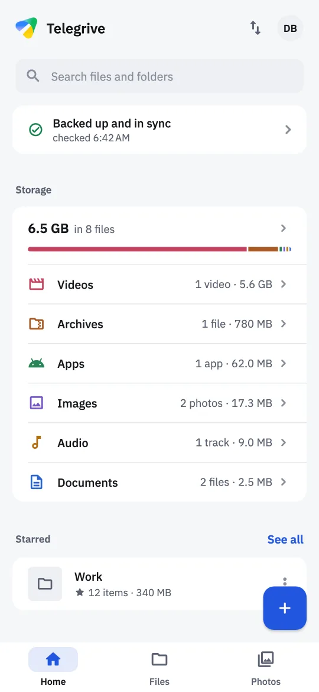
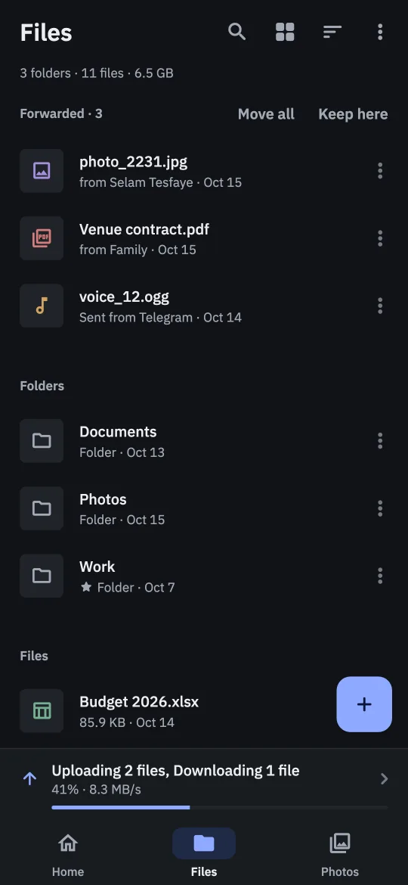
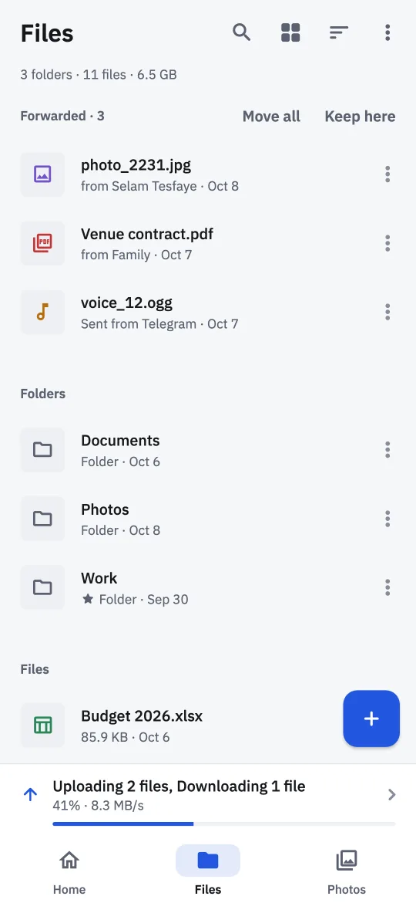

Telegriveprivate channel· 2m
Dawit Beyene CV.pdf240 KB
Dawit Beyene CV.pdf
#Work
Telegrive details
Telegrive turns the Telegram account you already have into a drive with no storage limit. Folders, search and full-quality photo backup, in a private channel only you can see.
On an iPhone? Telegrive isn't in the App Store, but you can still install it. Here's how.
On a computer?
Scan with your phone
to get Telegrive there.

Files sent to Saved Messages pile up in one long chat, and anything over 2 GB won't send at all. Telegrive keeps them in a private channel with folders, search and a photo timeline, at any size.
Telegrive is a full file manager and photo backup, not just a list of uploads. Everything you add goes to your channel, and everything in your channel shows up here.
Turn photo backup on once. Photos and videos go up as the original files, and new ones follow on their own while the phone charges, even with the app closed.
Anything over Telegram's 2 GB a message goes up in parts and comes back whole when you open it.
Folders, stars and albums, a trash that keeps things for 30 days, and Undo after every change. Files forwarded into your channel wait to be filed.


Find files by name, by date, and by the words inside PDFs, text files and scanned pages.
Videos and music start as they load, at the speed you choose, and pick up where you stopped. PDFs open page by page.
Share files in from any app, scan a document into a folder, send files to any Telegram chat without uploading again, and attach drive files in other apps.
One screen that says whether anything needs your attention, with a fix beside each thing.
The same two themes as in the app. Pick one and this page switches too.
Telegrive connects straight from your phone to Telegram, using Telegram's own client library. Your files go to your own channel, and nothing goes to the developer or to anyone else.
No backend and no middleman. Your sign-in and your files go from your phone to Telegram, and nowhere else.
What Telegrive keeps is on your phone, encrypted with a key from its keystore, behind your fingerprint or face if you like. Signing out clears it.
No analytics, no advertising, and no crash reporter phoning home. Telegrive doesn't even show you as online to your contacts.
Telegrive keeps one private channel on your account, archived out of your chat list, and every file and folder is a message in it. Uninstall the app, lose your phone, or open Telegram on a laptop: your files are still there.
The channel is private and only you are in it, but like any Telegram cloud chat it isn't end-to-end encrypted, so turning on two-step verification protects it better.
Telegrive installs straight from this page rather than from an app store. It takes about a minute, and you only do it once.
Tap the button on your Android phone. It's one file, and the right one for almost every phone from the last several years.
Download for AndroidOpen the file from your notifications or Downloads. The first time, Android asks you to allow installs from your browser or file manager. Allow it, go back, and tap Install.
Use your phone number, or scan a QR code with Telegram on another device. Telegrive sets up its channel and offers to back up your photos.
Updating later? Download the new version from this page and install it over the old one. You stay signed in, and your drive stays as it is.
On an iPhone? Telegrive installs differently there, with a free helper app. Follow the iPhone guide.
Moving to a new phone? Install Telegrive there and sign in the same way. Your whole drive comes back, folders and all.
Yes. There are no ads, no subscriptions and no in-app purchases. Telegrive is open source, and if it's useful to you, you can send a tip.
Telegram doesn't cap how much you keep in your chats and channels, and Telegrive keeps your drive in one of them. A single file can be as big as you like; ones over Telegram's limit for one message, 2 GB or 4 GB with Premium, are split into parts.
No. Telegrive is an independent app made by one developer. It is not made by, affiliated with, or endorsed by Telegram.
It talks to Telegram through TDLib, Telegram's own open-source client library, so your account works in Telegrive the way it does in any other Telegram app.
You, on any device signed in to your Telegram account. The channel is private with only you in it. Telegram stores it like any cloud chat, which isn't end-to-end encrypted. The developer never sees your files, because they never leave your phone and Telegram.
Your sign-in goes from your phone straight to Telegram. Telegrive has no server, so there is nowhere else for it to go.
Like any Telegram app, Telegrive appears in Telegram under Settings → Devices, where you can end its session at any time. And all of its code is public, so anyone can check what it does.
Your files stay in Telegram. Install Telegrive on the new phone, sign in the same way, and your whole drive comes back. Just don't delete the channel itself, or a message in it: that deletes those files.
Android shows the same warning for every app installed from outside an app store. It's expected, and you only see it the first time.
Every Telegrive release is built from the public source code and published with checksums, so you can confirm the file you downloaded is the one that was released.
Yes, for iOS 15 or newer, though not in the App Store. You install it with a free helper app such as Sideloadly, and refresh it once a week. Photo backup runs while the app is open there, and the Google Photos import and sharing in from other apps aren't on iPhone yet. The iPhone guide walks you through it.
If you're not sure, use the main Download button. It gets the arm64-v8a version, which is right for almost every phone from the last several years.
Older 32-bit phones need armeabi-v7a, and emulators and some Chromebooks need x86_64. Both are under Other versions.
Telegrive is free software under the GNU General Public License. If you'd like to help it grow, here's how.
Telegrive has no ads and sells nothing. Tips from the people who use it keep it going, and you can send one in birr on Jami.
Send a tipFound a bug or have an idea? Open an issue. Every line of Telegrive is on GitHub, and pull requests are welcome.
Know someone whose phone is always full? Send them this page.
Free for Android and iPhone. Takes a minute to set up, and your drive is ready.